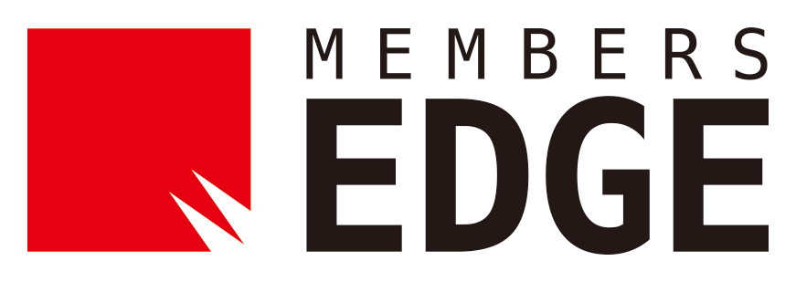

こんにちは世界！
仙台で東北初のRails Girlsが開催されます！
Ruby on Railsのすてきな世界を私達と一緒に体験しましょう！
2日間のワークショップは無料です。お気軽にご参加ください！
参加者の募集を開始しました！こちらからご応募ください。
応募締切は10/12(金)です。
概要 コーチに教えてもらいながらプログラムを設計して、プロトタイプを作り、コーディングします。
必要なもの 自分のノートパソコン、やる気とキラリと光るイマジネーションを持ってきてください！
コーチ募集中！ Rails Girls Sendai では現在コーチを募集しています。 こちらからお問い合わせ下さい。
| 19:00 - 21:00 |
インストール・ ディまずは、参加者同士、お互いに知り合いになりましょう。ご自分のノートパソコンをお持ちください。 それぞれのパソコンにRubyとRailsをインストールし、Rubyプログラミングの最初の一歩をコーチとともに始めてみましょう。 |
|---|
| 9:00 - 10:00 |
レジストレーション金曜日にRuby on Railsのインストールトラブルがあれば、朝のうちに解決しておきましょう。 金曜日にすべてうまく行ったひとは参加しなくてもOKです。9:30ごろからのんびりきてください。 |
|---|---|
| 10:00 - 10:30 |
開会一日の流れの説明。オーガナイザーから一言。 |
| 10:30 - 12:30 |
ワークショップはじめてのウェブアプリにトライしてみよう！ |
| 12:30 - 13:30 | ランチ |
| 13:30- 14:00 |
ライトニングトークス |
| 14:00 - 17:00 |
ワークショップ自分流のウェブアプリに変えてみよう！ |
| 17:00 - |
アフターパーティー & コーチによるライトニングトークス参加者、コーチ、スタッフによるパーティです。ワークショップで聞き損ねたことや RubyやRailsのこと、ステップアップの方法など、コーチに気軽に質問してみましょう。 |
会場:
株式会社メンバーズエッジ 仙台オフィス
地図
宮城県仙台市青葉区一番町4丁目6番1号 第一生命タワービル 8階
ご支援いただけるパートナーを募集しております。 こちらのフォームからご応募ください。
Rails Girls Sendai は以下のすばらしいパートナーとの共同開催です。
株式会社メンバーズエッジは東証1部・株式会社メンバーズグループのシステム開発専門子会社です。最先端のWeb開発に挑戦し、積極的拠点展開を通じて日本中をエンジニア活躍の舞台にすることをミッションにしています。
 GitHub はソフトウェアの共同開発をするための最高の環境を開発・提供しています。1000 万人以上のユーザーが友だち、同僚、クラスメートと、時にはまったく知らない人とでさえ、コードなどを共有して素晴らしいプロジェクトを行っています。
GitHub はソフトウェアの共同開発をするための最高の環境を開発・提供しています。1000 万人以上のユーザーが友だち、同僚、クラスメートと、時にはまったく知らない人とでさえ、コードなどを共有して素晴らしいプロジェクトを行っています。
 日本Rubyの会は、Rubyの利用者の支援とRuby(とRubyのライブラリ)開発者の支援を目的とした一般社団法人です。現在は、ドキュメントの整備や、イベントへの参加協力等を中心に活動しています。
日本Rubyの会は、Rubyの利用者の支援とRuby(とRubyのライブラリ)開発者の支援を目的とした一般社団法人です。現在は、ドキュメントの整備や、イベントへの参加協力等を中心に活動しています。
参加費はどのくらいかかりますか？ 無料です。申し込むときにはわくわくした気持ちだけあればいいです。
どのような人が参加するのでしょうか？ コンピュータを使ったことがある女性ならだれでも参加できます。これまでに開催されたRails Girlsイベントには様々な年齢の女性がやってきました。ご自分のノートパソコンをお持ちください。
男性も参加できますか？ 参加できます。ただし、必ずウェブアプリを作りたがっている女性と一緒に参加してください。申し込み人数が多い場合はお断りすることがあります。
プログラミングの経験があります。手伝うことはできますか？
はい！Rails Girls Sendai ではコーチとしてお手伝いしてくださる方を募集する予定です。
お手伝いいただける方はこちらからお申し込みをお願いいたします。
 Yuki Konno
Yuki Konno Mayumi Emori
Mayumi Emori